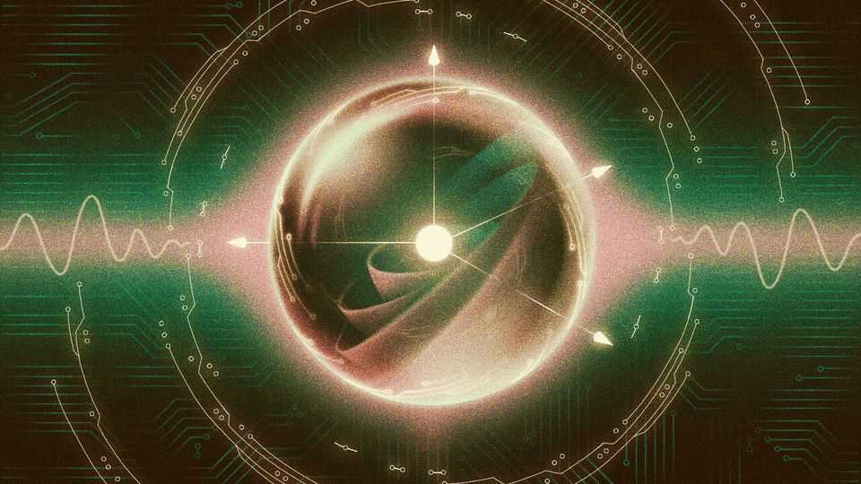
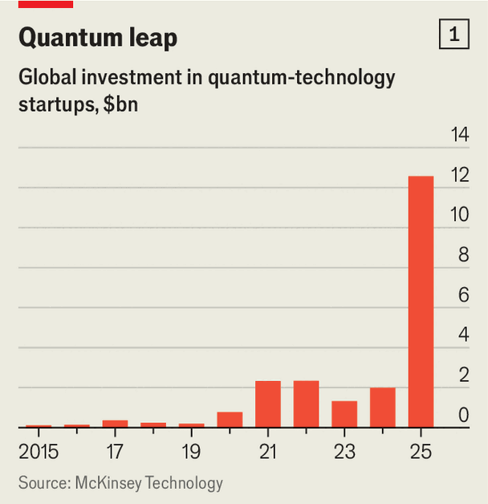
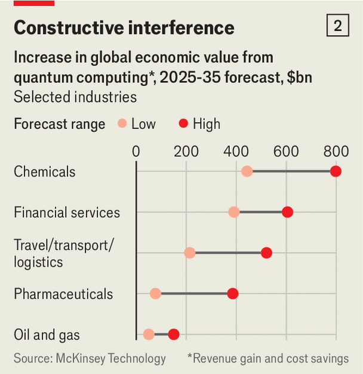

Quantum computers promise mathematical superpowers
But like all superpowers, they will have their limits

Jul 30th 2026
AS THEY ZIP across the internet, passwords, bank transfers, emails and the like are protected from prying eyes by encryption. But no one is quite sure how reliable the technology is. Despite decades of trying, no-one has found a feasible way to break it. But at the same time, no-one has been able to prove such a method does not exist. In principle, a mathematician could have a brainwave tomorrow and bring the entire edifice of e-commerce—not to mention personal privacy—crashing down.
In fact, something like that has already happened. In 1994 Peter Shor, an American mathematician, worked out how to reduce the time taken to break many types of encryption from billions of years to hours or less. The only snag was that “Shor’s algorithm”, as it is now known, required something that at the time only existed on university blackboards: a quantum computer.

These days, quantum computers—which exploit quantum mechanics to perform some calculations far faster than ordinary computers—not only exist, but are attracting serious attention from investors. The market values of IonQ and Rigetti, two firms which have been listed since 2021 and 2022 respectively, are up seven- and four-fold since their debuts. In April McKinsey, a consultancy, reported that the amount of money invested in quantum startups had reached $12.6bn in 2025—a six-fold increase on the year before (see chart 1). The following month America’s government said it would take $2bn-worth of equity stakes in nine quantum-computing companies, including Rigetti, GlobalFoundries, a chipmaker, and Quantinuum, a firm based in Colorado that raised around $1.7bn when it went public in June.
Tech titans are keen too. In 2025 Google announced that it had used its new “Willow” quantum processor to complete a task in hours that would have taken a conventional supercomputer thousands of times longer. IBM has its own quantum chip, named Nighthawk; the firm is following a public roadmap according to which it plans to build a “fault-tolerant” quantum computer—a vital milestone—by 2029.
Besides breaking the encryption that makes the internet work, the mathematical superpowers offered by quantum computers could revolutionise chemistry, biology and materials science. They will allow precise simulations of how atoms and molecules interact, a trick beyond the power of “classical” machines. They may (though this is less certain) also boost some of the mathematics used in finance and logistics. And they may both boost, and be boosted by, artificial intelligence.
But while quantum computers are powerful, they are also limited. Scott Aaronson, a computer scientist at the University of Texas at Austin, draws an analogy with cars and the Space Shuttle. A quantum computer is like the Space Shuttle in that no car, however advanced, can get to orbit. But if all you want to do is drive the kids to school, then even though the Space Shuttle might technically be up to the job, it would be far more expensive, no faster and much less convenient. For 90% of tasks, says Dr Aaronson, a quantum computer offers no advantage over the conventional sort.
The reason lies in the peculiar physics of quantum mechanics, which quantum computers exploit to do their work. One of those peculiarities is superposition. Bits, the fundamental units of classical computing, can exist in one of two states: 1 or 0. Qubits, their quantum cousins, can likewise represent 1 or 0. But they can also exist in a sort of probabilistically blurred state of both that has no equivalent in classical physics. It is not that the measurer is simply ignorant of which state the qubit is “really” in. In a precisely defined but non-classical sense, it is, until it is measured, a blend of both at once.
Quantum computers combine superposition with another quantum-mechanical property called entanglement, which ties superposed particles together in such a way that their properties can only be defined collectively. The upshot is that, whereas a string of three classical bits can take one of eight different values, a string of three qubits can exist as a blend of all eight possibilities at once. As the number of bits in a string rises, the number of possible states rises exponentially. A thousand bits can form so many combinations that it would be physically impossible to write them all down, even if you used every atom in the universe to do so.
A classical computer that wanted to search through such a vast space—to find the string of numbers necessary to decrypt a coded message, say—would have to try all the potential solutions one at a time. A quantum computer could represent and manipulate them all at once. But there is a catch. Reading a quantum computer’s output requires undoing the superposition of its qubits. Do that naively, and the result will be a single string of numbers chosen blindly from the astronomical number of possible strings.
Properly harnessing the power of a quantum computer means finding a way to load the dice, so that when you collapse the superposition, the chances are high that what comes out is the right answer. The trick is to exploit the mathematical structure of a problem in a way that amplifies the chance of getting the right answer while suppressing the zillions of wrong ones. Only some sorts of mathematics possess the necessary structure—which is why quantum computers do not offer a universal speed boost for every sort of problem.
That is the theory. The question is how best to put it into practice. Classical computers were built in all sorts of ways over the decades, from mechanical gears to punch-cards and electronic valves, before settling on integrated circuits built from silicon. Quantum computing is still in its experimental phase, with several technologies jostling for primacy.
Google and IBM, for instance, are working with qubits made from superconducting circuits, through which currents whizz with no electrical resistance. Quantinuum and IonQ, which is based in Maryland, are betting on trapped ions—charged atoms that can be manipulated with tiny flashes of laser light. Pasqal, a French firm, is pursuing a similar technology that uses uncharged atoms instead. Xanadu, a Toronto company, hopes that photons, the fundamental particles of light, can do the trick. Intel, an established American chipmaker, hopes to use a quantum property of electrons called spin.
Each approach has pros and cons, says Toby Cubitt, one of the founders of PhaseCraft, a British startup that develops algorithms for quantum computers. Superconducting qubits need cooling almost to absolute zero, for instance, which adds cost and complexity. Superconducting qubits are fast, but their delicate quantum states can collapse quickly, leaving less time for computations. Trapped ions are more stable, but slower. Photonic systems do not need fancy cooling, but it is harder to get the photons entangled with each other.
One important question is how error-prone a given technology is. Superpositions are delicate, and can be upset by the tiniest interference from the outside world—a stray breath of heat, say, or errors in the machine’s control hardware. If those errors happen too often, they will swamp any calculations. If a machine’s qubits can achieve a minimum level of robustness, though, things can be improved by linking many physical qubits and running error-correcting codes to produce a single “virtual” or “logical” qubit that is reliable enough to make useful work possible.
Building a “fault tolerant” quantum computer with a useful number of those logical qubits is the field’s biggest target. In 2024 Google published a proof of principle, announcing that it had used 101 physical qubits on one of its Willow chips to produce a single logical qubit. Under some circumstances, Google’s researchers were able to keep the system stable for about an hour. IBM has set itself a goal of producing a fault-tolerant quantum chip with 200 logical qubits by 2029.
For now, says Dr Cubitt, no technology stands out as a clear front-runner. Advances are coming thick and fast. In March, for instance, an American startup called Oratomic announced that it had come up with better error-correction technology that it thinks could allow it to build a “utility-scale” quantum computer out of neutral atoms by 2030. Indeed, there are so many competitors that the Defence Advanced Research Projects Agency (DARPA), an appendage of the American government, is conducting a “Quantum Benchmarking Initiative” to try to work out which, if any, might produce an industrially useful machine by 2033.
But what exactly might such a “commercially useful” machine be used for? Even after decades of research, “the two most impressive quantum speedups we know of are the same ones we knew about 30 years ago,” says Dr Aaronson. “Breaking some kinds of cryptography, and simulating quantum mechanics itself.”
Start with codebreaking. Officials in America, Britain, France and other rich countries are chivvying firms to upgrade to new sorts of cryptography that are thought to be resistant to quantum computers. America’s standards agency recommends making the switch by 2035. But there may be less time than they had thought. In March Oratomic outlined how better error correction might allow attacks on existing cryptography using only tens of thousands of physical qubits, rather than the hundreds of thousands that researchers had thought would be necessary.
Soon afterwards researchers at Google outlined a way to break in minutes the codes that protect cryptocurrencies, using just 1,200 logical qubits. Google was worried enough about its own findings to abandon the norm in computer-security research for publishing results openly. Instead, it published a “zero-knowledge proof”, a mathematical construct that allows others to confirm its results without revealing its methods. The firm also announced that it would aim to complete its internal upgrade to post-quantum cryptography by 2029.
Even that might be too late to keep prying eyes completely away. Western intelligence agencies have been warning for several years about foreign adversaries using a strategy called “harvest now, decrypt later”, in which juicy data can be captured and stored offline, to be unscrambled when a quantum computer that can do the job is ready. (Whether Western spies are doing something similar themselves is left to the reader’s imagination.)
Switching to new sorts of cryptography will be hard but doable for giant firms like Google, Amazon and Microsoft that have strong central control of their infrastructure, says Brian LaMacchia, who used to run Microsoft’s programme on security and cryptography, and is now president of the Farcaster Group, a consultancy. But there is a “long tail” of vulnerable systems that either cannot be upgraded at all, or are run by organisations that lack the know-how. “Think of every piece of connected medical equipment in a hospital,” he says. “You’ll never get all that upgraded and re-certified. Or banks and cash machines, or credit cards, or toll roads, or sewage-treatment works, and so on.”
Happily, quantum computers will have constructive effects as well as destructive ones. The original rationale for developing them, as outlined by Richard Feynman, an American physicist, in 1982, was to better simulate quantum mechanics itself.
Quantum mechanics governs the chemical reactions that take place in factories, pharmaceutical labs, or living organisms. But the complexity of the maths needed to simulate the process increases exponentially with the number of particles involved. That means that accurately modelling even relatively simple chemical interactions is beyond the reach of classical machines. “If you want to model something like hydrogen and oxygen coming together to form water—that’s very difficult to do classically,” says Dr Cubitt.
Instead, classical machines must rely on a rougher approximation called “Density-Functional Theory” which won one of its pioneers a Nobel prize in 1998. “DFT solves many problems perfectly well,” says Dr Cubitt. “Sometimes, though, it falls flat on its face. It predicts that silicon will be a semiconductor, but it gets the band-gap [a semiconductor’s defining property] completely wrong.” Dr Cubitt cites superconductivity, the behaviour of electrons in new solar-panel materials, or the properties of cathodes in batteries as examples of areas in which existing methods fall short.
Quantum computers can efficiently simulate such interactions because they are quantum-mechanical systems themselves. Once the behaviour and interactions of all the particles in a reaction (primarily the electrons around the various atoms) have been encoded into a machine’s qubits, the computer can be made to evolve according to the same quantum-mechanical rules that govern the real molecule. That avoids the need to carry out the enormous numbers of equations that would choke a classical machine that tried to simulate what was happening mathematically. The hope is that quantum computers could replace today’s rough-and-ready simulations with something closer to how an engineer can model a bridge, says Dr Cubitt—“where the object will behave exactly as the computer predicts it will”.

That promise is why McKinsey forecasts that the chemical and pharmaceutical industries will offer some of the biggest opportunities for quantum computers (see chart 2). Several firms are already experimenting. In April, for instance, Wellcome, a big medical-research charity, announced that a team of researchers at Algorithmiq, a startup based in Milan, the Cleveland Clinic, an American hospital, and IBM had won a $2m prize for developing a mixed, quantum-plus-classical simulation of the behaviour of an anti-cancer drug that is activated when light is shone on it. The team’s hybrid system was, according to Algorithmiq, better able to model the interactions between electrons in the drug’s atoms after the drug absorbed a photon than any classical machine would have been.
What makes both cryptography and simulating quantum mechanics stand out is that the speedups on offer from quantum computers are both enormous and a sure thing. But there exists an entire “third continent” of problems, says Dr Aaronson, where speedups are either more modest, less certain, or both.
Financiers, for instance, use “Monte Carlo” simulations to model the likely performance of a portfolio of assets by generating thousands of plausible future scenarios and seeing how the portfolio performs under each of them. In 2018 a trio of researchers at Xanadu published a paper demonstrating the use of a quantum algorithm for pricing financial instruments.
On paper, the idea looks attractive: the algorithm involved is a derivative of an existing one that has already been shown to offer a significant speedup over classical methods. But actually readying the computer to perform its calculations takes time, and one roundup of quantum finance, published in Nature Reviews Physics in 2023, acknowledged that it was still unclear whether a quantum approach would actually beat a classical one in practice.
Another candidate for quantum-minded financiers is the Quantum Approximate Optimisation Algorithm (QAOA). It can be applied to constrained-optimisation problems, such as building a portfolio of financial instruments in which the likelihood of gain must be maximised while the probability of big losses minimised. Ashley Montanaro, one of Dr Cubitt’s fellow founders at Phasecraft, says the firm’s work suggests QAOA can indeed offer a substantial speedup, but only in some cases. And, he says, the extra steps required to prepare the quantum computer may be enough to overwhelm the faster calculations in practice. A paper published in 2025 by Eric Stopfer and Friedrich Wagner, of the Fraunhofer Institute for Integrated Circuits, in Germany, assessed QAOA with real-world data and found that classical approaches usually outperformed it—although they noted that the modest powers of today’s quantum hardware limited the size of the problems they could test.
These sorts of uncertainties should be chipped away with time. As quantum hardware becomes more advanced, more and more firms will start experimenting with it. “The original idea for quantum computers was simulating quantum mechanics,” notes Dr Aaronson. “It was an unexpected miracle that they turned out to be good for anything else.” If there are more unexpected miracles lurking out there, then the more people that look for them, the more likely they are to be found. ■